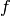
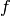

Данная секция содержит информацию о том, как создавать и использовать полиномы в Sage.
Есть три способа создания полиномиальных колец.
sage: R = PolynomialRing(QQ, 't')
sage: R
Univariate Polynomial Ring in t over Rational Field
Данный способ создаст полиномиальное кольцо и сообщит Sage, что ‘t’ - это неопределенность
при печати на экран. Однако это не определяет символ t для использования в Sage так,
что нельзя ввести полином (как  ), принадлежащий
R.
), принадлежащий
R.
Другой способ:
sage: S = QQ['t']
sage: S == R
True
Этот способ имеет ту же проблему по отношению к t.
Третий способ более удобный
sage: R.<t> = PolynomialRing(QQ)
или
sage: R.<t> = QQ['t']
или даже
sage: R.<t> = QQ[]
Этот способ влечет за собой то, что он объявляет переменную t как неопределенность в полиномиальном кольце так, что ее можно использовать при создании элементов R, как описано ниже. (Заметьте, что третий способ похож на обозначение конструктора в Magma, и, как в Magma, он может быть использован для широкого набора объектов.)
sage: poly = (t+1) * (t+2); poly
t^2 + 3*t + 2
sage: poly in R
True
Какой способ бы ни использовался для задания полиномиального кольца, можно вычленить неопределенность в виде генератора:
sage: R = PolynomialRing(QQ, 't')
sage: t = R.0
sage: t in R
True
Похожая конструкция используется для комплексных чисел: комплексные числа могут быть рассмотрены как генерированные из вещественных чисел с использованием символа i; из этого следует:
sage: CC
Complex Field with 53 bits of precision
sage: CC.0 # 0th generator of CC
1.00000000000000*I
Для полиномиальных колец можно получить и кольцо, и его генератор, или просто генератор во время создания кольца:
sage: R, t = QQ['t'].objgen()
sage: t = QQ['t'].gen()
sage: R, t = objgen(QQ['t'])
sage: t = gen(QQ['t'])
Наконец, можно совершить некоторые арифметические опрерации в .
sage: R, t = QQ['t'].objgen()
sage: f = 2*t^7 + 3*t^2 - 15/19
sage: f^2
4*t^14 + 12*t^9 - 60/19*t^7 + 9*t^4 - 90/19*t^2 + 225/361
sage: cyclo = R.cyclotomic_polynomial(7); cyclo
t^6 + t^5 + t^4 + t^3 + t^2 + t + 1
sage: g = 7 * cyclo * t^5 * (t^5 + 10*t + 2)
sage: g
7*t^16 + 7*t^15 + 7*t^14 + 7*t^13 + 77*t^12 + 91*t^11 + 91*t^10 + 84*t^9
+ 84*t^8 + 84*t^7 + 84*t^6 + 14*t^5
sage: F = factor(g); F
(7) * t^5 * (t^5 + 10*t + 2) * (t^6 + t^5 + t^4 + t^3 + t^2 + t + 1)
sage: F.unit()
7
sage: list(F)
[(t, 5), (t^5 + 10*t + 2, 1), (t^6 + t^5 + t^4 + t^3 + t^2 + t + 1, 1)]
Деление двух полиномов создаст элемент в дробном поле, что будет сделано Sage автоматически.
sage: x = QQ['x'].0
sage: f = x^3 + 1; g = x^2 - 17
sage: h = f/g; h
(x^3 + 1)/(x^2 - 17)
sage: h.parent()
Fraction Field of Univariate Polynomial Ring in x over Rational Field
Используя ряды Laurent, можно посчитать раскрытие ряда в дробном поле QQ[x]:
sage: R.<x> = LaurentSeriesRing(QQ); R
Laurent Series Ring in x over Rational Field
sage: 1/(1-x) + O(x^10)
1 + x + x^2 + x^3 + x^4 + x^5 + x^6 + x^7 + x^8 + x^9 + O(x^10)
Если назвать переменную по-другому, можно получить различное одномерное полиномиальное кольцо.
sage: R.<x> = PolynomialRing(QQ)
sage: S.<y> = PolynomialRing(QQ)
sage: x == y
False
sage: R == S
False
sage: R(y)
x
sage: R(y^2 - 17)
x^2 - 17
Кольцо определяется переменной. Обратите внимание, что создание другого кольца с переменной x не вернет различного кольца.
sage: R = PolynomialRing(QQ, "x")
sage: T = PolynomialRing(QQ, "x")
sage: R == T
True
sage: R is T
True
sage: R.0 == T.0
True
Sage поддерживает кольца степенных рядов и рядов Laurent для любого базового кольца. В следующем примере
создадим элемент из и поделим, чтобы
создать элемент из  .
.
sage: R.<T> = PowerSeriesRing(GF(7)); R
Power Series Ring in T over Finite Field of size 7
sage: f = T + 3*T^2 + T^3 + O(T^4)
sage: f^3
T^3 + 2*T^4 + 2*T^5 + O(T^6)
sage: 1/f
T^-1 + 4 + T + O(T^2)
sage: parent(1/f)
Laurent Series Ring in T over Finite Field of size 7
Также можно создавать кольца степенных рядов, используя двойные скобки:
sage: GF(7)[['T']]
Power Series Ring in T over Finite Field of size 7
Для работы с полиномами с несколькими переменными, сначала надо объявить полиномиальное кольцо и переменные.
sage: R = PolynomialRing(GF(5),3,"z") # here, 3 = number of variables
sage: R
Multivariate Polynomial Ring in z0, z1, z2 over Finite Field of size 5
Так же, как и для одномерных полиномов, существует несколько путей:
sage: GF(5)['z0, z1, z2']
Multivariate Polynomial Ring in z0, z1, z2 over Finite Field of size 5
sage: R.<z0,z1,z2> = GF(5)[]; R
Multivariate Polynomial Ring in z0, z1, z2 over Finite Field of size 5
Чтобы имена переменных состояли из букв, надо использовать следующее:
sage: PolynomialRing(GF(5), 3, 'xyz')
Multivariate Polynomial Ring in x, y, z over Finite Field of size 5
Немного арифметики:
sage: z = GF(5)['z0, z1, z2'].gens()
sage: z
(z0, z1, z2)
sage: (z[0]+z[1]+z[2])^2
z0^2 + 2*z0*z1 + z1^2 + 2*z0*z2 + 2*z1*z2 + z2^2
Можно использовать более математическое обозначение, чтобы построить полиномиальное кольцо.
sage: R = GF(5)['x,y,z']
sage: x,y,z = R.gens()
sage: QQ['x']
Univariate Polynomial Ring in x over Rational Field
sage: QQ['x,y'].gens()
(x, y)
sage: QQ['x'].objgens()
(Univariate Polynomial Ring in x over Rational Field, (x,))
Многомерные полиномы внедрены в Sage с использованием словарей Python. Sage использует Singular [Si] для вычислений НОД и базиса Gröbner.
sage: R, (x, y) = PolynomialRing(RationalField(), 2, 'xy').objgens()
sage: f = (x^3 + 2*y^2*x)^2
sage: g = x^2*y^2
sage: f.gcd(g)
x^2
Создадим идеал  , генерированный из 
и
, генерированный из 
и  умножением (f,g) на R.
умножением (f,g) на R.
sage: I = (f, g)*R; I
Ideal (x^6 + 4*x^4*y^2 + 4*x^2*y^4, x^2*y^2) of Multivariate Polynomial
Ring in x, y over Rational Field
sage: B = I.groebner_basis(); B
[x^6, x^2*y^2]
sage: x^2 in I
False
Между прочим, базис Gröbner является не списком, а неизменяемой последовательностью. Это означает, что у него есть вселенная, родитель и что он не может быть изменен.
sage: B.parent()
Category of sequences in Multivariate Polynomial Ring in x, y over Rational
Field
sage: B.universe()
Multivariate Polynomial Ring in x, y over Rational Field
sage: B[1] = x
...
ValueError: object is immutable; please change a copy instead.
Некоторая коммутативная алгебра доступна в Sage и внедрена с помощью Singular. К примеру, можно посчитать простое разложение и простые соответствующие
для  :
:
sage: I.primary_decomposition()
[Ideal (x^2) of Multivariate Polynomial Ring in x, y over Rational Field,
Ideal (y^2, x^6) of Multivariate Polynomial Ring in x, y over Rational Field]
sage: I.associated_primes()
[Ideal (x) of Multivariate Polynomial Ring in x, y over Rational Field,
Ideal (y, x) of Multivariate Polynomial Ring in x, y over Rational Field]